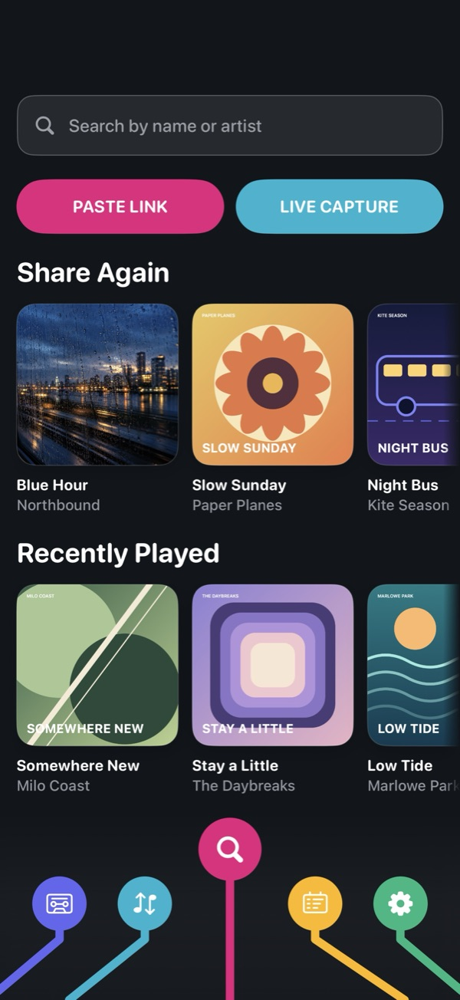
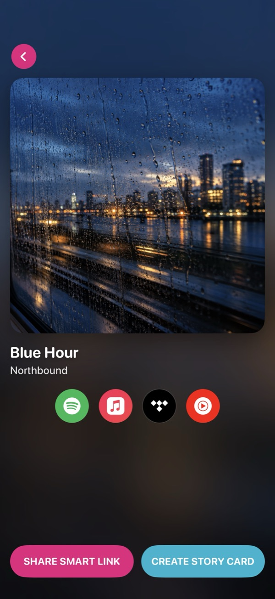
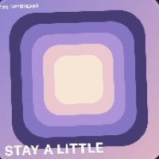
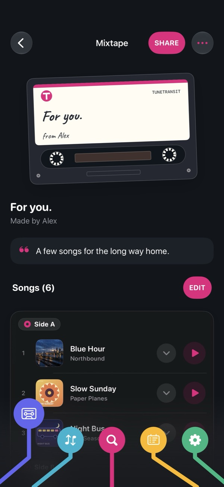
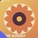

Your song.
Their app.
You use Apple Music. Your friend uses Spotify. Send them one link and they can play the song in their own music app. They don’t need TuneTransit.
iPhone · iPad · Mac · Apple Vision Pro
-
Find the song
Search for it, paste a link from your music app, or use Live Capture to name a song playing nearby.

-
Send the link
Tap Share Smart Link and send it in Messages, WhatsApp, or any chat.

-
They pick their app
The link shows a button for each music app. One tap and the song opens in theirs.
share.tunetransit.appSam sent you a song Blue Hour NorthboundOPEN IN
Pick your app, then theirs.
YOU’RE ON
THEY’RE ON
You share “Blue Hour” from Apple Music. Your friend opens the link and plays the same recording in Spotify, with nothing to install.
Tracks
Find out if they opened it.
Every link you share is kept in Tracks as a Departure. The line at the bottom of the card is its receipt: how many times the link was opened, in which music apps, and whether anyone replied.
The page your friend opens has a Send One Back button. They pick a song for you and it shows up as an Arrival, where you can play a preview or open it in your own app.
Departure30m ago
AfterglowJuniper Vale
Arrival·from Sam25m ago
Reply to “Afterglow”

Stay a LittleThe Daybreaks
Mixtapes
Make someone a mixtape.
Add songs, name the tape, and write a note. You can say why each song made the cut, split the tape into Side A and Side B, and hide the last track as a surprise.
You send one link. It opens a page with your cassette, your note and the songs, where they can preview each one or open it in their music app. They don’t need TuneTransit to listen.
A tape holds 5 songs for free, or 500 with Premium, which also adds tape colors, cases, labels and stickers.
You make it in the app

They open it in a browser
A few songs for the long way home. Alex
Blue HourNorthbound

Slow SundayPaper Planes
01The week’s favorite
Blue HourNorthbound
This Week
- 02
AfterglowJuniper Vale
- 03
Slow SundayPaper Planes
- 04
Stay a LittleThe Daybreaks
Recent Hops
AfterglowJuniper Vale
Blue HourNorthbound
Station Board
See what everyone’s sharing.
This Week ranks the songs the most people shared on TuneTransit in the last seven days, from 01 to 10.
Recent Hops shows shared links as they get opened: the song, the city when it’s available, and how long ago. The dot is the color of the music app it was opened in.
Tap play for a preview, or tap a song to open it in your music app.
Before you board
Does my friend need TuneTransit?
No. Your link opens in their browser, on iPhone, Android, or a computer. They tap the music app they use and the song is there. No download, no account.
Which music apps does it work with?
Apple Music, Spotify, TIDAL, and YouTube Music, in any direction. Catalogs differ a little between services, so a song can occasionally be missing from one of them.
Will they hear the same version I sent?
Yes. TuneTransit keeps the exact recording you shared instead of switching to a remix, a live take, or a “feat.” version on the other service.
What does it cost?
TuneTransit is free to download, with 3 song or album searches a day and mixtapes of up to 5 songs. Premium adds unlimited searches, bigger mixtapes, Story Cards, and more for $1.99 a month or $9.99 once.
Where can I use it?
On iPhone, iPad, Mac, and Apple Vision Pro. You can also ask Siri to find a song, or use TuneMessage to send songs right inside Messages.
Who makes TuneTransit?
One developer. Questions, ideas, and bug reports go straight to the person who built it at mail@tunetransit.app.